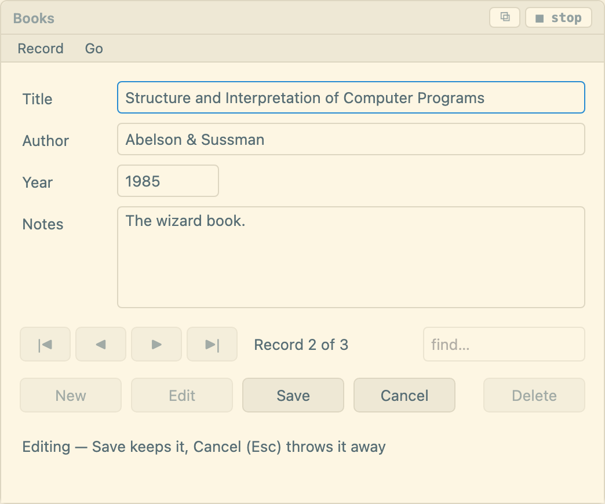
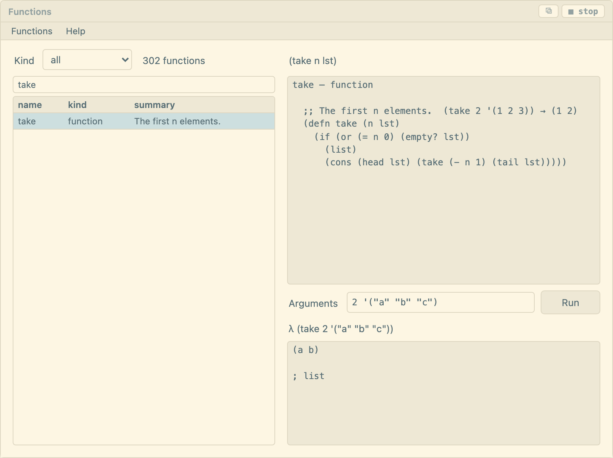
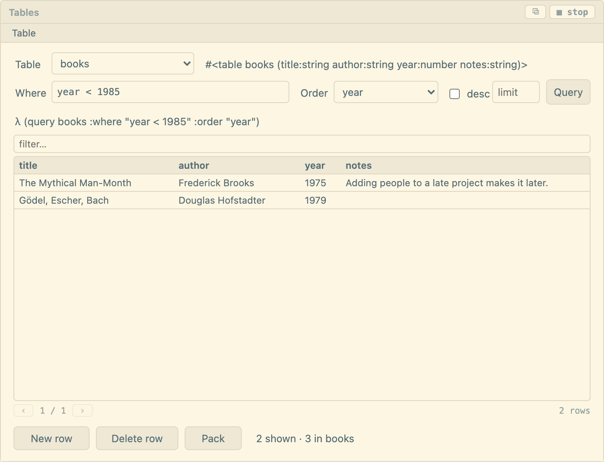
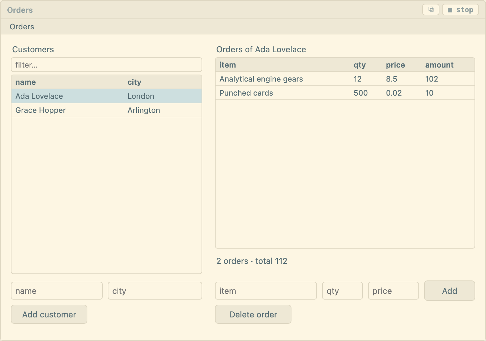
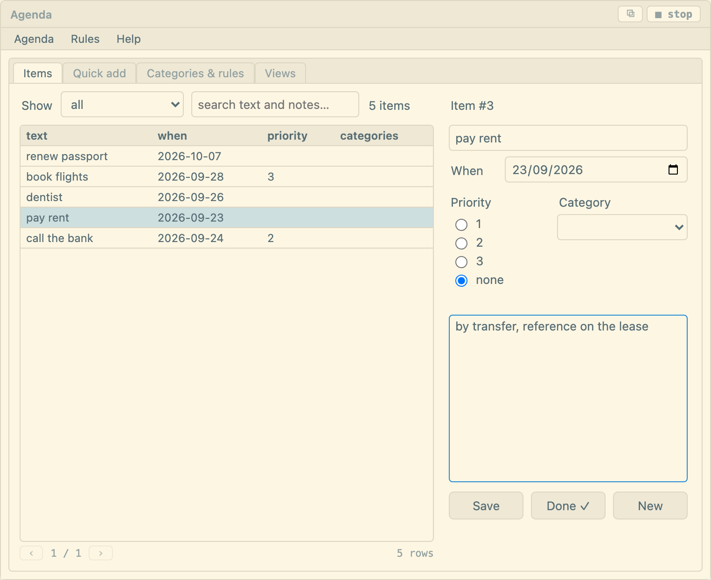

Everything EEditor does, in the order you're likely to need it.
A workspace is an ordinary folder. EEditor shows what's in it, edits the Markdown files it
finds, and writes nothing else there except one hidden folder, .eeditor/, for
your keybindings.
On first launch EEditor picks a default folder and opens it. To use a different one, press open… at the top of the file tree and choose any directory — a git repository, a synced folder, an external disk. The choice survives restarts.
Because the workspace is just a folder, everything you already do with folders keeps working: back it up, version it, sync it, or open the same notes in another editor. EEditor takes no lock and keeps no separate index that could drift from the files.
What EEditor stores outside your notes: the agenda database (items, categories, rules) and any tables you create in EELisp live in an SQLite file in the application's own data directory — not in your workspace. Your notes are never inside it.
The file tree is the left column. Click a file to open it. The two buttons at the top create a new file and a new folder at the root; to create inside a folder, right-click it (long-press on a touch screen) and use the menu, which also offers Rename… and Delete.
Renaming and deleting keep open tabs honest: a renamed file follows its tab, and deleting a file or folder closes the tabs underneath it and moves you to a neighbour rather than leaving a dead editor.
The tree names files by where they sit in the workspace, which is no use the moment you want to hand one to something else. The same right-click menu offers Show location… — the full path on disk, selectable, with a Copy button — and Reveal in Finder, which opens Finder with the file selected. Right-clicking the workspace row itself locates the workspace folder.
Editor tabs have the same two items on right-click. That is the only way to ask about a file opened in place from outside the workspace: it is marked ↗ and never appears in the tree.
Files beginning with a dot are hidden from the tree, which is why your keybindings live in
.eeditor/keybindings.eelisp — present, editable, out of the way.
⌘D opens today's note, YYYY-MM-DD.md at the root of the workspace,
creating it with a date heading if it doesn't exist. It never overwrites an existing one, so
pressing it repeatedly through the day just takes you back to the same note.
The editor is CodeMirror 6 with Markdown syntax highlighting. Edits save automatically about a second after you stop typing; ⌘S saves immediately. Nothing unsaved survives as unsaved: closing a tab, switching to another one, closing the window and quitting all write what is in the buffer first.
Markdown is the default, not the limit — any text file opens: source code, a csv, a log, a
config file, a file with no extension at all. Only binary formats (images, PDFs, archives) are
left out of the file tree — which is why a note's assets folder looks empty there,
even though its images are in it.
Tab indents and ⇧Tab outdents, as in any editor; with the
[[ completion list open it accepts the highlighted note. To move focus out
of the editor — to the buttons, the tabs, the REPL — use ⌥Tab
(⇧⌥Tab goes backwards).
⌘E (or the preview button) swaps the editor for rendered Markdown. Wiki links become clickable there, images show, and diagrams are drawn. Press it again to go back.
Paste an image (a screenshot, Copy Image in a browser), drop an image file on the
editor, or use the image… button. The image is copied into an
assets folder beside the note and a link to it goes in where the caret — or the
drop — was:

The editor shows the link; the preview and the PDF show the picture. The link is relative to
the note, so it means the same thing to any other Markdown tool that opens the folder, and
you can write one by hand for an image that is already in the workspace. An image that isn't
where the link says is marked in place rather than silently left out. A name that is taken
gets a number (chart-1.png); nothing is overwritten. Images are stored in the
workspace, so a ↗ note opened in place has to be copied in before it can take one.
A fenced block marked mermaid is drawn as a diagram in the preview and in the PDF
— sequence diagrams, flowcharts, class, state and Gantt charts, anything
Mermaid knows:
```mermaid
sequenceDiagram
Browser->>Server: GET /notes
Server-->>Browser: 200 OK
```The diagram follows the theme on screen and is always light on paper. If Mermaid can't read the block, the preview shows its source with the line it stumbled on just above.
The ☀/☾ button toggles between a light theme (Solarized) and a dark one (One Dark). Your choice is remembered.
PDF renders the current note and opens the system print dialog, where Save as PDF produces a file. Headings, lists, tables, code blocks, images and diagrams all come across.
Select any EELisp in a note — a line, a few forms, an inline `(+ 1 2)` — and press
⌘⇧↵. The result appears in the REPL, which opens if it was hidden. Surrounding
backticks and fence lines in the selection are ignored.
For code you'll run again, a fenced block saves the selecting: with nothing selected,
⌘⇧↵ runs the whole eelisp block the caret is in — a live notebook
without leaving the document.
```eelisp
(items :category "work" :when-before (today))
```
Opening a second note puts it in a new tab rather than replacing what you had. Click a tab to
switch, click its × to close. ⌘⌥→ and ⌘⌥← move between
tabs if you bind them — see keybindings for the
next-tab, prev-tab and close-tab commands.
A tab marked ↗ is a file from outside the workspace; see §7.
Fuzzy matching over every file in the workspace. Type fragments in any order —
agmt finds agenda-meeting.md. Arrow keys move, ↵ opens,
Esc dismisses.
Searches the contents of every note and lists each hit with its line. Choosing one opens the note at that line.
Any #hashtag in a note is indexed and appears in the tags panel
in the sidebar, with a count. Clicking a tag opens full-text search filtered to it, which is
the fastest way to see everything you marked #idea or #invoice.
Write [[Note name]] to link to another note. Typing [[ opens an
autocomplete list of existing notes, so links stay spelled the way the files are.
In preview, a wiki link is a plain click. In the editor, ⌘-click it. Either way you land in the linked note.
Under the editor, a bar lists every note that links to the one you're reading — ↩ 3 backlinks: index.md, projects.md, 2026-08-09.md. Click one to follow it. The bar hides itself when nothing points here.
Notes opened from outside the workspace are not part of the link graph, so they show no backlinks and aren't offered in autocomplete.
There are three ways a foreign file arrives:
However it arrives, EEditor asks once what you want:
An in-place file is deliberately not part of the workspace: it won't appear in the tree, in search results, in the tag index or in backlinks. If you decide you want it after all, press copy in in the header and it becomes a real note — including whatever unsaved edits are on screen, which also makes this the escape hatch for a read-only original.
EEditor registers itself for .md, .markdown, .txt,
.eelisp and .lisp, as an alternative handler rather than stealing
those types from your existing editor. It can open far more than that — any text file — but
only these types are offered by the system; for the rest, drag the file in, use the
file… button, or pick EEditor through Finder's Open With → Other….
The agenda is a personal information manager in the Lotus Agenda tradition: you throw text at it, and structure emerges from rules rather than from forms you fill in.
The box at the top of the agenda panel takes plain language and parses it — call Bob tomorrow !! becomes an item due tomorrow at high priority. Dates, priorities and people are recognised as you write them.
Click one to expand its editor, which holds:
Categories are hierarchical: work/clients/acme is a child of
work/clients. Assigning a child implies its parents, and an exclusive parent
allows only one of its children at a time — so an item can't be both
status/open and status/done.
Rules are the part that makes the agenda feel alive. A rule is a condition and an action; run them and every matching item is filed automatically. Open the setup panel to define categories and rules, then apply them.
(defrule invoices
:when (str-matches text "invoice|bill|payment")
:assign "finance/invoices")
Inside a condition the item is in scope: text, notes,
id, categories and props are bound, along with
(get "field"), (has-category "work"), (overdue?) and
(match n) for the capture groups of the last regular expression. Because rules
are stored as EELisp and re-evaluated, anything the language can express, a rule can decide.
A view is a saved filter with optional grouping — everything overdue, grouped by
category. Define with defview, list with views, display with
show.
The calendar button opens a month grid of dated items. Drag an item to another day to reschedule it; the change is written straight back.
A recurring item regenerates when completed. every handles the date arithmetic —
daily, weekly and monthly, with intervals like every 2 weeks — without depending on
an external calendar.
A sheet is a grid of cells whose formulas are EELisp. Each one is a file in your workspace —
Budget.eesheet — so it sits in the file tree, opens in a tab, and can be renamed,
moved or revealed like any note. Right-click a folder and choose New sheet…,
or type a name ending in .eesheet into ＋.
What you type decides it:
1200 — a numberrent — text, and '42 keeps something number-shaped as text=(sum B1:B2) — a formula: one EELisp expression after =
A number written the way you'd write it is read as one, and takes the format it was wearing:
50% becomes 0.5 shown as a percentage, $1,200 and
R$ 1.200,50 become money, 1 200,50 becomes twelve hundred and a half.
Whichever of . or , comes last is the decimal point, and a lone comma
before three digits is separating thousands — 1,200 is a thousand two hundred,
1,5 is one and a half. A format you set yourself is never overwritten.
2026-09-16 is a date — the spelling EELisp itself uses, so it sorts properly and
date-add and date-diff work on it. Other spellings stay text:
16/09/2026 and 09/16/2026 are the same ten characters in two
languages, and a sheet guessing which half is the month would be worse than leaving it alone.
A formula can call anything in scope — a builtin, something from the snippets, a
defn you wrote in a note — and can read the database. Cells are named the way the
next section describes.
=(sum B1:B9)
=(/ B10 12)
=(if (> B10 1500) "over" "ok")
=(count-records contacts)Change a cell and everything that depends on it recalculates, in order, and is written at once — a sheet has nothing to save. Formulas that read each other in a circle show #CYCLE, a formula that failed shows #ERR, and one that reads a failed cell fails too, naming the cell where the trouble started. The line under the formula bar spells out the error of the selected cell.
| You write | It means |
|---|---|
B1 | what is in B1 |
B1:B9 | those nine cells as a list — what sum and its friends take |
$B$1 | B1, pinned: copy the formula somewhere else and it still reads B1 |
B$1 · $B1 | only the row pinned · only the column pinned |
Rates!A1 | A1 in the sheet called Rates, sitting beside this one |
References are written in capitals: B1 is a cell, b1 is an ordinary name.
An empty cell reads as nil, and sum, avg, min
and max pass over blanks and text rather than complaining about them. A cell whose
formula pointed at something you deleted shows #REF!.
Every one of these was run in a sheet before it was written down.
| Formula | Gives |
|---|---|
=(sum B1:B9) | the total |
=(avg B1:B9) · =(min B1:B9) · =(max B1:B9) | the mean, the smallest, the largest |
=(length B1:B9) | how many cells the range covers |
=(round (/ E1 3) 2) | a third of E1, to two decimals |
=(/ B1 $E$1) | B1's share of the total in E1 — pinned, so it survives being filled down |
=(if (> E1 1500) "over" "ok") | one answer or the other |
=(str A1 ": " B1) | rent: 1200 — text stuck together |
=(str-join ", " A1:A3) | rent, food, travel |
=(sum (map (fn (x) (* x 1.1)) B1:B3)) | ten per cent on each, then the total |
=(sum (filter (fn (x) (> x 400)) B1:B3)) | only the ones over 400 |
=(date-add C1 1 :months) | a month after the date in C1 |
=(date-diff C3 C1) | the days between two dates |
=(date-format C1 "EEEE") | Monday — and "dd/MM/yyyy" for the date written that way |
=(date-format (today) "yyyy-MM-dd") | today. (today) on its own is an instant — a number — so it needs dressing |
=(count-records contacts) | rows in a table, and :where "city = ?" :params '("Lisbon") narrows it |
=Rates!A1 · =(sheet-get "Rates" "A1") | a cell of another sheet, named or worked out as it runs |
There is no separate list of "spreadsheet functions": a cell can call anything the language
knows, including the functions you write in your own notes. In the REPL,
(functions "date-") lists what is in scope and (source sum) shows how
one was written — the
EELisp reference has them all.
Rates!A1 reads a cell of a sheet sitting next to this one, and
Rates!A1:A9 a range of it — money/Q3!A1 for one in a folder. While
both sheets are open, changing the one being read updates the one reading it. A sheet that
wasn't open at the time catches up when you press ↻.
Every cell keeps its last result, so a sheet opens showing the values it was saved with — no code runs because you opened a file, even one someone sent you. Formulas run when you change what they read, or when you press ↻, which recalculates all of them. That is also how to refresh a formula that reads the database or the clock, or one reading a sheet that was closed when it changed: those aren't tracked.
| Key | Does |
|---|---|
| arrows · Tab · ⇧Tab | Move; ⇧+arrows or a drag selects a range |
| typing | Replace the cell; arrows then write it and move on |
| ↵ or F2 | Edit what's in the cell; ↵ again writes it and moves down |
| Esc | Leave the cell as it was |
| ⌫ | Clear the selection |
| ⌘Z · ⇧⌘Z | Undo · redo typing and formatting |
| ⌘A | Select everything |
| ⌘C · ⌘X · ⌘V | Copy, cut, paste |
The box left of the formula bar names the selection; type C3 or
A1:B9 there to jump.
Copying puts the values on the clipboard, tab-separated, so they paste into Numbers, Excel or a
note as a table. Pasting back into a sheet is different: it types the formulas, and
moves their references by however far they travelled — copy =(sum B1:B2) one column
right and it adds up column C. A $ pins a row or column so it stays where it is.
The small square at the bottom-right corner of the selection is the fill handle: drag it down or across to repeat the selection, each copy's references moving with it — how a column of totals gets written once. Fill down and Fill right are in the right-click menu when the selection covers more than one row or column.
PDF in the header prints the sheet as a table — the values as they are shown, each cell keeping its formatting — through the usual print dialog, where you choose Save as PDF.
Right-click a sheet in the file tree for Export as CSV: it writes the values
beside it — the numbers themselves, without the currency symbols or thousands separators the
grid shows, and each formula as what it worked out to. Right-click a .csv for
Import as sheet, which makes a sheet next to it. A field that reads as a number
becomes one and everything else stays text, so a formula smuggled into a CSV arrives as text
rather than as something your machine runs.
The toolbar sets bold, italic, alignment, a number or date format, decimal places, wrapped text, lines around the cells, and the text and fill colours — all for the selection, and undo takes any of it back. A cell you fill but don't give a colour of its own gets ink that can be read on that fill.
Drag the edge of a column header to resize the column, or a row header's edge to change the row's height; double-click an edge to put it back to the default. Right-click a row or column header, or long-press on a touch screen, to insert or delete rows and columns. Formulas follow their cells when rows and columns move, and a formula that read a deleted cell shows #REF!. Inserting and deleting can't be undone.
The REPL, an eelisp block in a note and your keybindings reach the same sheets by
name, and an open sheet shows the change straight away:
(sheet-get "Budget" "B3")
(sheet-rows "Budget" "A1:B2") ; a table in the REPL
(sheet-set "Budget" "B2" "500")
(sheet-put "People" "A1" (query contacts :order "name"))Every sheet function is in the EELisp reference.
A form is a window you draw — buttons, boxes, a grid — with EELisp behind its events. It is
the Visual Basic and FoxPro way of putting a screen over a table, and it lives in your
workspace as a file: Contacts.eeform sits in the tree, opens in a tab, and can be
renamed, moved and searched like a note. Right-click a folder and choose
New form…, or type a name ending in .eeform into ＋.
A form tab has three modes, switched at the top of the pane: design, code and run.
Three columns, as VB had them.
Switch to code and there is no second language. The form is EELisp: one
(form …) holding the layout, which the designer rewrites as you work, followed by
your own code — a table, and the handlers the events name. Edit either half; the other follows.
(form "Contacts" :size (480 400) :on-load load-contacts
(label lblName :text "Name" :at (16 20) :size (72 24))
(textbox txtName :required true :at (96 16) :size (240 28))
(label lblAge :text "Age" :at (16 56) :size (72 24))
(textbox txtAge :number true :min 0 :max 150 :at (96 52) :size (80 28))
(button btnSave :text "Save" :submit true :default true :at (96 96) :size (88 30) :on-click save-contact)
(grid grdAll :columns ("name" "age") :sortable true :filter true :page-size 5
:at (16 144) :size (448 232) :on-change pick-contact))
(deftable contacts (name:string age:number))
(defn load-contacts (f)
(ui-set "grdAll" :rows (query contacts :order "name")))
(defn save-contact (f)
(insert contacts {:name (ui-get f "txtName") :age (ui-get f "txtAge")})
(ui-set "txtName" :value "")
(load-contacts f))
(defn pick-contact (f)
(let (row (ui-get f "grdAll"))
(ui-set "txtName" :value (dict-get row "name"))
(ui-set "txtAge" :value (dict-get row "age"))))
Double-click a button. That names its on-click handler after it, writes an empty
(defn btnSave-click (f) …) at the end of the file, and opens the code with the
caret on it. The … beside any event in the properties panel does the same, and
you can type any function's name there instead.
A handler is a function of the form. Its one argument, f, is the whole form as a
dict keyed by control name, so (ui-get f "txtName") is what the box holds — text,
a number, true or false, the chosen item, the selected row. To change the form, a handler
queues changes; EEditor applies them, in order, when the handler returns.
| In a handler | Does |
|---|---|
(ui-get f "ctl") | the control's value |
(ui-set "ctl" :value v) | change what it holds — also :text, :items, :rows, :columns, :filter, :src, :file, :pages, :interval, :enabled, :visible |
(ui-message "…") | a toast |
(ui-focus "ctl") | put the caret there |
(ui-close) | stop the form |
(ui-open "Orders") | open and run another form, in a window |
Everything else is the language: insert, query, update,
sheet-get, your own functions. A grid takes what query returns as its
:rows, and the row a user picks comes back as a dict, so
(dict-get row "id") is what update and delete want.
Handlers are ordinary functions: try one from the REPL with a dict of your own.
| Control | Holds | Of note |
|---|---|---|
label | :text | |
textbox | :value, text | :multiline; :number makes it worth a number, or nil while empty; :placeholder, :pattern, :min, :max; :readonly to show text that can be copied but not typed over, :mono for code |
button | :text | :submit checks the form first; :default is pressed by ↵ in a box, :cancel by Esc |
checkbox | :value, true or false | |
radio | the chosen one of :items | |
dropdown · listbox | the chosen one of :items | a listbox also fires on-dblclick |
grid | the selected row, a dict | :columns; :rows from a query; :sortable headers; a :filter box; :page-size pages; :editable cells, with on-edit handed the row as edited |
date | :value, yyyy-mm-dd | :min, :max |
image | :src | a path beside the form, like a note's assets/x.png |
tabs | the open one of :pages | see pages below |
sheet | :file | a live .eesheet beside the form; :toolbar false for cells only |
timer | invisible; fires on-tick every :interval ms while enabled |
Every control has a name, :at, :size, :enabled and
:visible. Events are properties naming a function: :on-click for a
button, :on-change for anything with a value, :on-load for the form.
The order of the controls in the file is the Tab order when it runs; the properties panel has
earlier and later buttons to move one.
A :submit button does three things before its handler runs. First each control's
own rules: :required, :min and :max on numbers and dates,
:pattern — a regular expression the whole text must match. The first one broken is
marked, focused and named: Age must be at most 150. Then the button's
:on-validate handler, if it has one — a function of the form that returns a message
to refuse, or nil to go ahead. Then :on-click.
(defn check-contact (f)
(if (str-contains (ui-get f "txtName") " ")
nil
"A contact needs a first and a last name"))
▶ run evaluates the file — the table gets defined, the handlers too — builds
the controls, and fires on-load. What the form writes goes into the workspace's
database, the same one the REPL and your notes see, so (browse contacts) shows what
it saved. ■ stop is the way back to the designer. Opening a form runs nothing:
only run does, the same rule as sheets and eelisp blocks.
To keep a form open while you write, run it in a window: type
(ed-form "Contacts") in the REPL, bind it to a key, or press ⧉
on a running tab. The window floats over the app, drags by its title bar, and comes back where
you left it. (ui-open …) from another form opens one the same way.
A :menu on the form puts a menu bar under its title; each item names the handler
it runs, "-" is a separator. The designer edits it as text — a title on its own
line, items indented as label = handler.
(form "Contacts" :size (480 400)
:menu (("Contacts" ("Reload" load-contacts) ("-") ("Close" close-form))
("Help" ("About" about)))
…)
A tabs control lists its :pages, and any control with
:page "Details" belongs to that page and shows only while it is open. Controls
stay flat in the file with their own coordinates — draw them inside the tabs control's box —
and the designer shows one page at a time; click a tab header on the canvas to open another.
A sheet control shows a .eesheet beside the form as the real grid,
formula bar and all. Handlers read and write it with sheet-get and
sheet-set, and the grid follows.
Six forms to download, run and take apart. Save one into your workspace — any folder — and it
appears in the tree; press ▶ run, then switch to code to see
how it's done. Each file opens with a comment saying what it shows, and every handler has a
line above it saying what it does. They write to your workspace's database, into tables of
their own (books, customers, orders…), and the ones that
start empty have a menu item that adds sample rows.
Contacts.eeform · A table, a grid, and boxes to fill it. Required and number boxes, a submit button with its own check, an editable grid with sorting, a filter and pages, and a menu — nearly everything in this chapter, in sixty lines.

Books.eeform · The dBASE way of working through a
table: |◀ ◀ ▶ ▶| move record by record, Record 2 of 3 says where you
are, and a find box jumps to the first title or author that matches. New,
Edit, Save, Cancel (or Esc) and
Delete do what they say. While you browse, the boxes are locked; while you
edit, moving is. That is one function setting :enabled on every control, and it
is the part worth copying:
;; Browsing: the boxes locked, moving allowed. Editing: the other way round.
(defn bk-mode! (mode n)
(set! bk-mode mode)
(let (editing (not (= mode "browse")))
(for-each c '("txtTitle" "txtAuthor" "txtYear" "txtNotes" "btnSave" "btnCancel")
(ui-set c :enabled editing))
(ui-set "btnNew" :enabled (not editing))
(ui-set "btnPrev" :enabled (and (not editing) (> bk-pos 0)))
…))
Where you are is a variable, bk-pos, defined in the file with def
and moved with set!. The file is evaluated when the form runs, so it starts at
the first record every time.

Functions.eeform · Every function in scope in a grid you can filter: the builtins, the special forms, the macros, the snippets you've loaded, the functions in your notes, and the form's own handlers. Pick one and its source appears — for anything written in EELisp, the definition as it was written, comments and all. Type arguments the way you would at the REPL and press Run. Double-click a row to start from its parameter names.
It is built on two functions that return what (functions) and
(source …) print, as data a program can use:
(function-list "str-j")
; → ({:name "str-join" :kind "builtin" :sig "(str-join sep parts) → string" :summary "Joins a list…"})
(source-text "take") ; → the text (source take) prints
;; Run: the call is written out as text and read back, so arguments are typed as at the REPL.
(eval (parse (str "(" name " " args ")")))
Tables.eeform · Pick any table in the
workspace. Narrow it with a where — plain SQL, year < 1985 — choose
an order and a limit, and press Query. The line above the grid is the query
exactly as it ran; paste it into the REPL and you get the same rows. Double-click a cell to
change it, add an empty row, delete one, and Pack to remove deleted rows for
good.
The table is picked while the form runs, so its name is in a variable. Any database function
takes the table as a bare name — (query books) — or as an expression that
works one out:
(query (str tb-table) :where "year < ?" :params (list 1985))
(update (str tb-table) id {:title "…"})
Orders.eeform · Two tables tied by a field —
orders.customer holds a customer's id. Pick a customer and their orders appear,
each with its amount worked out and a total underneath. Add an order, change one in place,
delete one; the total follows.
(query orders :where "customer = ?" :params (list or-customer))
Agenda.eeform · The agenda from chapter 8, and nearly every kind of control: a menu bar, tabs, a grid that sorts and pages, a date box, a radio group, dropdowns, a checkbox, and a timer that refreshes the list every minute.
An item read by id comes back whole with item->dict — notes included, which the
grid doesn't carry:
(let (it (item->dict (item-get id)))
(ui-set "txtNotes" :value (dict-get it "notes")))
defcategory, defrule and defview read their arguments
as written — they are meant to be typed — so a form writes the call out as text and
evaluates it, with json-stringify to put quotes around what was typed safely:
(eval (parse (str "(defrule " name
" :when (str-contains (str-lower text) " (json-stringify word) ")"
" :assign " (json-stringify category) ")")))⌘J shows and hides the EELisp REPL. Type an expression, press ⌘↵, and the result appears above the prompt.
Results are not text dumps. A query renders as a real table; defform and
edit render as a real form with working fields, including computed ones. This is
dBASE III's interaction model, rebuilt.
λ (deftable notes (title:string body:string))
λ (insert notes {:title "Kickoff" :body "Ship by Friday"})
λ (browse notes) ; → a table widget
λ (edit notes 1) ; → a form widget
Two functions answer that from inside the REPL, so you never have to leave the app to look
something up. (functions) lists everything in scope — every builtin, every macro,
every special form, and anything you or the snippets bundle have defined — with its call shape.
Give it a fragment of a name and it lists only those.
λ (functions "date-")
builtins
date-add (date-add date n unit) → string
date-diff (date-diff a b) → number
date-format (date-format d pattern) → string
— 3 of 186 functions matching "date-"
(source f) then shows one of them. For a builtin that's its manual entry —
signature, what it does, a worked example. For anything written in EELisp it's the definition
as it was written, comments and all:
λ (source zzalinhar)
zzalinhar — function
;; ─── zzalinhar — Text alignment ───
;; Aligns text to left, right, center, or justified within a given width.
;; (zzalinhar "hello" 20 :center) → " hello "
(defn zzalinhar (text width align)
…
That applies to your own code too. A ;; comment written directly above a
defn — in a snippet, in a note, in your keybindings file — becomes that function's
documentation, and (source …) reads it back months later — as does a comment
written after a one-line definition on the same line. The name is not evaluated, so
(source map) works as well as (source 'map).
The snippets button loads the standard EELisp bundle — ten modules and over a
hundred and fifty functions covering text, maths, dates, conversion, crypto, reference tables,
networking, world clocks and Bitcoin. Once loaded they're callable from the REPL and from your
keybindings alike — and (functions "zz") is the fastest way to see what arrived.
The full language is documented at eelisp.app.
⌘⇧K opens .eeditor/keybindings.eelisp, writing the documented defaults
into it the first time. That file is the shortcut table. Save it and it reloads at
once; delete it and the built-in defaults apply again.
(bind "Mod-i" body…)
Modifiers join with - or +. Mod is ⌘ on
macOS and Ctrl elsewhere, and Cmd, Ctrl, Alt
(Option) and Shift can be named directly: "Mod-Shift-f",
"Ctrl-Alt-t". Every binding needs at least one modifier — function keys and
Esc may go bare. A later binding wins the same key, and unbinding one hands the key
back to the editor's own behaviour.
The body is EELisp, evaluated on the engine when the key fires. It returns editor commands as
data, and a binding may list several — they run in order against the live document. The REPL
carries out the same commands: type (ed-insert "hello") at the prompt and it lands
in the note.
| Command | Effect |
|---|---|
(ed-cmd "save") | run a built-in command (table below) |
(ed-insert text) | insert at the caret, caret after the text |
(ed-insert-at pos text) | insert at an absolute offset |
(ed-goto pos) | caret to an absolute offset |
(ed-goto-line n) | caret to the start of line n (1-based) |
(ed-select from to) | select a range |
(ed-replace text) | replace the selection |
(ed-replace-range from to text) | replace an explicit range |
(ed-set-buffer text) | replace the whole document |
(ed-open "notes/x.md") | open a file in a tab |
(ed-new path)(ed-new path text) | create the note if it doesn't exist, then open it — never overwrites |
(ed-form "Contacts") | open a form (chapter 10) and run it in a floating window |
(ed-message text) | show a toast |
(ed-nothing) | do nothing, useful as a cond branch |
These are defined fresh before every run:
| Variable | Is |
|---|---|
*file* | path of the current note |
*cursor* | caret offset |
*line* / *col* | caret line and column, both 1-based |
*line-text* | text of the caret's line |
*lines* | number of lines in the document |
*sel-from* / *sel-to* | selection bounds |
*selection* | the selected text |
*buffer* | the whole document |
*date* | "YYYY-MM-DD", local time |
*time* | "HH:MM" |
*now* | "YYYY-MM-DD HH:MM:SS" |
*selection* and *buffer* are only computed when your binding
mentions them, so a shortcut stays fast in a large document.
(on-start …) runs the same kind of commands once, after the workspace loads. With
no on-start form at all, EEditor opens welcome.md while that is still
around, and today's note — created if it doesn't exist yet — once it isn't.
(on-start (ed-open "todo.md")) ; always this note
(on-start (ed-cmd "daily-note")) ; today's note, created if needed
(on-start (ed-new (str *date* ".md"))) ; the same, spelled out
(on-start) ; nothing — an empty editor
An empty (on-start) is deliberately different from leaving the form out: one says
"open nothing", the other says "decide for me".
Anything here can be named by (ed-cmd "…"):
| Command | Does |
|---|---|
save | save the current note |
quick-open | fuzzy file finder |
search | full-text search |
daily-note | open (or create) today's note |
new-file / new-folder / new-sheet / new-form | create at the workspace root, asking for a name |
form-design / form-code / form-run | switch the active form tab's mode |
open-file | pick any file; asks whether to copy it in or edit in place |
copy-into-workspace | turn the current ↗ note into a copy in the workspace |
open-keys / reload-keys | edit or re-read this config |
toggle-repl / focus-repl | show/hide the REPL, or jump into it |
focus-editor | put the caret back in the document |
toggle-preview | editor ⇄ rendered Markdown |
toggle-theme | light ⇄ dark |
export-pdf | print the current note to PDF |
insert-image | pick images; each is copied into assets/ beside the note and linked |
snippets | load the standard EELisp bundle |
calendar | open the month grid |
agenda-setup | categories and rules panel |
close-tab / next-tab / prev-tab | tab management |
;; A timestamped heading at the caret, on its own line
(bind "Mod-Shift-i"
(ed-insert (str (cond (= *col* 1) "" true "\n") "## " *time* "\n\n")))
;; Wrap the selection in bold
(bind "Mod-b" (ed-replace (str "**" *selection* "**")))
;; A task line
(bind "Mod-Shift-t" (ed-insert "- [ ] "))
;; Link back to today's note
(bind "Mod-Shift-b" (ed-insert (str "[[" *date* "]]")))
;; File this note under a dated folder and tell me about it
(bind "Mod-Alt-n"
(ed-new (str "journal/" *date* ".md") (str "# " *date* "\n\n"))
(ed-message "journal entry ready"))Mistakes are reported, not swallowed: a binding that fails prints its error in the REPL and shows a toast naming the key, and problems in the config itself are listed when it reloads.
Below 900 pixels the layout becomes a single pane with a tab bar — Files, Editor, REPL — so the same app works on a phone without pretending to be a desktop.
The workspace is the app's Documents folder, exposed in Files → On My iPhone → EEditor. Anything you put there appears in EEditor, and anything EEditor writes is visible to other apps and to whatever backup or sync you already use.
file… imports a single document through the system picker. folder… points EEditor at an external folder — an iCloud Drive directory, for instance — and remembers it across launches.
The defaults. ⌘ is Ctrl on Windows and Linux.
| Key | Does |
|---|---|
| ⌘S | Save |
| ⌘P | Quick open |
| ⌘⇧F | Full-text search |
| ⌘D | Today's note |
| ⌘I | New note stamped with the minute |
| ⌘⇧I | Timestamped heading at the caret |
| ⌘⇧N | New file |
| ⌘E | Preview ⇄ edit |
| ⌘J | Show/hide the REPL |
| ⌘⇧K | Edit these keybindings |
| ⌘⇧↵ | Run the selection as EELisp, or the eelisp block at the caret |
| ⌘↵ | Evaluate in the REPL |
| ⌘-click | Follow a wiki link from the editor |
Every one of these is a line in your keybindings file, and every one can be changed.